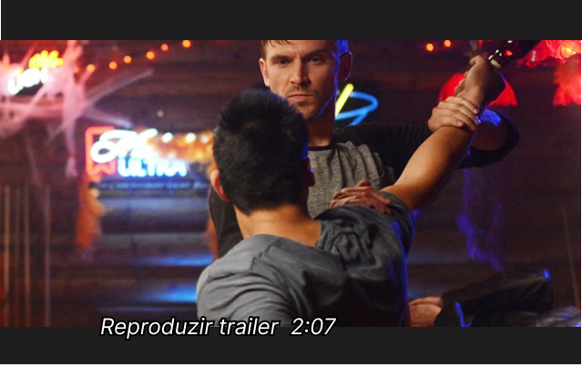

O HÓSPEDE


Suspense
Um soldado se apresenta à família Peterson, alegando ser amigo de seu filho que morreu em combate. Depois que é recebido em sua casa, uma série de mortes acidentais parecem estar conectadas à sua presença.
Getulio Dias
A narrativa começa estruturada como a de um filme de terror, apostando numa atmosfera tensa ao sugerir, aos poucos, que há algo de errado em situações aparente- mente normais. A segunda metade, porém, segue as convenções do cinema de ação e fica cada vez mais absurda e violenta, aspectos que o filme abraça completamente. Assim,O Hóspede pode ser exagerado e até meio tolo, mas jamais se leva a sério o suficiente para fazer disso um problema. O ar descontraído prevalece até nos momentos que deveriam ser sérios; o sangrento clímax da história, por exemplo, acontece em meio a engraçadas decorações de Halloweeen de um colégio, com direito a bonecos pés- simos, insetos de brinquedo, gelo seco, sons de trovões e gargalhadas maléficas.
Embora ainda traga alguns diálogos dolorosamente expositivos, o roteiro tenta, na maior parte do tempo, manter uma aura de mistério sobre seu personagem titular, sem explicar exatamente suas origens e todas as consequências do procedimento que o transformou na máquina de matar que conhecemos. Aqui, essa falta de informação faz a diferença, já que contribui para o senso de estranhamento que o personagem de Stevens provoca nas outras figuras da trama e na audiência. Divertido e despretensioso, O Hóspede faz o melhor de seu modesto orçamento; Wingard demonstra seu indiscutível talento na direção, a excelente fotografia banha os personagens em vibrantes cor- es neon e a ação é sempre embalada por uma ótima trilha sonora, repleta de sintetizadores e pop oitentista.